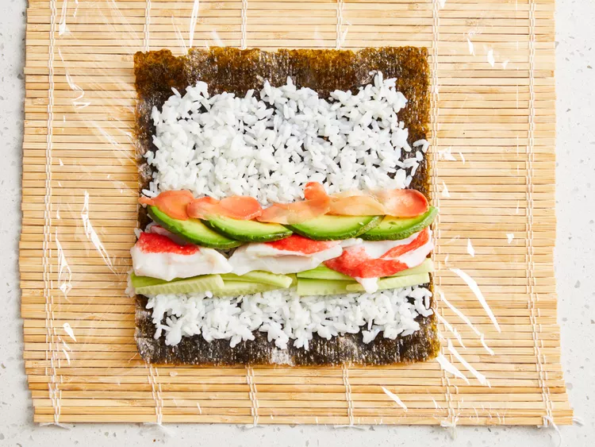

Sushi

Wha is Sushi
Sushi is a traditional Japanese dish of prepared rice,dish of prepared vinegared and white sugar, rice, usually with tablespoons sesame seeds salt, accompanied by a variety of ingredients, such as seafood, often raw, and vegetables. Styles of Sushi and its presentation vary widely, but the one key ingredient is "rice"
What are the Ingredients you need to make Sushi
- 1 ⅓ cups water
- ⅔ cup uncooked short-grain white rice
- 3 tablespoons rice vinegar
- 3 tablespoons white sugar
- 1 ½ teaspoons salt
- 4 sheets nori seaweed sheets
- ½ pound imitation crabmeat, flaked
- 1 avocado - peeled, pitted, and sliced
- ½ cucumber, peeled, cut into small strips
- 2 tablespoons pickled ginger
What are the steps to put together Sushi
-
Step
Gather all ingredients. Preheat the oven to 300 degrees F (150 degrees C).
-
Step
Bring water to a boil in a medium pot; stir in rice. Reduce heat to medium-low, cover, and simmer until rice is tender and water has been absorbed, 20 to 25 minutes.
-
Step
Mix rice vinegar, sugar, and salt in a small bowl. Gently stir into cooked rice in the pot and set aside
-
Step
Lay nori sheets on a baking sheet.
-
Step
Heat nori in the preheated oven until warm, 1 to 2 minutes.
-
Step

Center 1 nori sheet on a bamboo sushi mat. Use wet hands to spread a thin layer of rice on top. Arrange 1/4 of the crabmeat, avocado, cucumber, and pickled ginger over rice in a line down the center.
-
Step
Lift one end of the mat and roll it tightly over filling to make a complete roll. Repeat with remaining ingredients.
-
Step
Use a wet, sharp knife to cut each roll into 4 to 6 slices.
Nutrition Facts (per serving)
152
Calories
4g
Fat
26g
Carbs
4g
Protein
Back To Tpp
Back TO Main Menu